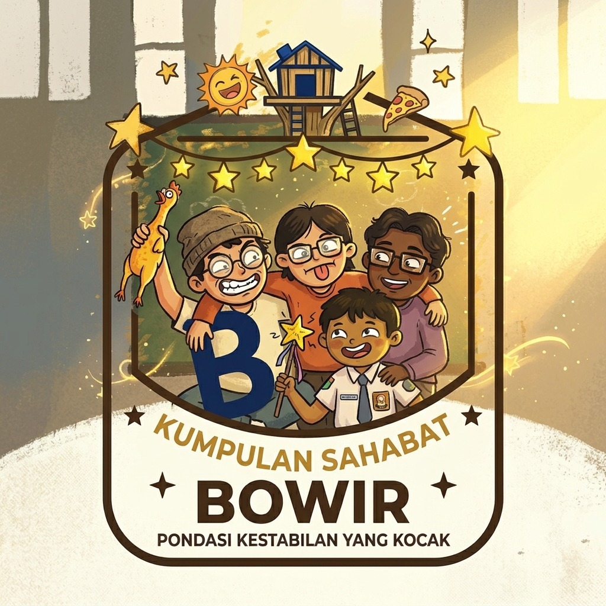

Logo “BOWIR” melambangkan empat sekawan yang telah menjadi keluarga. Empat karakter yang saling merangkul merepresentasikan rasa saling menjaga, menerima, dan menemani dalam setiap keadaan. Perbedaan penampilan dan karakter menunjukkan bahwa mereka tidak harus sama untuk dapat menjadi satu. Setiap pribadi membawa warna masing-masing, sementara keceriaan dan ekspresi yang unik menggambarkan hubungan yang hangat, penuh candaan, dan tanpa sekat. BOWIR bukan sekadar tentang empat sahabat yang selalu bersama, tetapi tentang empat orang yang menjadi tempat pulang satu sama lain—berbeda dalam karakter, namun satu dalam rasa kekeluargaan.